Nota: é altamente recomendável que você leia este conteúdo via computador para melhor visualização dos elementos visuais
Introdução
O que é controle de versão?
Para começar este guia vamos imaginar uma situação. Suponha que você, desenvolvedor, está trabalhando em um projeto importante e que provavelmente será revisado várias vezes e, como em todos os projetos, você acaba gerando diferentes versões desse trabalho. Mas, e se em algum momento você tiver que retornar a uma versão que tinha um detalhe que continha um detalhe inicialmente descartado, mas que agora deseja recuperar? Como voltar àquela versão que se perdeu no abismo dos ctrl + Z? É exatamente para isso que um controle de versões existe.
Em suma, essas são ferramentas que nos permitem armazenar as versões dos nossos projetos de forma segura e com fácil manejo, sem ter que depender de inúmeros backups que vão ocupar muita memória em nossas máquinas.
E duas dessas ferramentas se tornaram extremamente populares no mercado, temas centrais deste guia: Git e Github.

Diferença entre Git e Github e seus benefícios
Em 2005, Linus Torvalds – criador do sistema operacional Linux – criou um um Sistema de Controle de Versões (Version Control System – VCS, em inglês) chamado Git. O Git nada mais é do que um programa feito para armazenar versões de projetos em repositórios - explicados em detalhes mais adiante - locais. Além disso, o software inclui um terminal que permite acessar essas versões por meio de comandos. De forma breve, o Git é a forma que usamos para guardar as versões dos nossos projetos de forma local, ou seja, apenas em nossas máquinas.
Já o Github, é como um Git "tunado", que permite, por meio da tecnologia do Git, salvar nossos repositórios de forma remota em nuvem e também viabiliza a colaboração entre desenvolvedores. Basicamente, o GitHub, além de ser um meio de acessar repositórios e arquivos remotamente – da mesma maneira que você está fazendo agora para ler este conteúdo –, também funciona como uma espécie de “LinkedIn para desenvolvedores” É lá que a maioria das pessoas que busca uma vaga na área armazena publicamente seus projetos de portfólio – assim como eu faço. E acredite, isso é algo que a maior parte das grandes empresas no mercado valorizam muito.
O Github te permite construir um portfólio profissional e colaborar com outras pessoas, dando aos usuários desejados permissão para editarem o código do seu repositório. Também não é à toa que muitas empresas utilizam o GitHub Enterprise, que é o serviço do GitHub voltado para organizações, ele permite que empresas gerenciem seus projetos remotamente e de forma organizada, possibilitando que todos os funcionários colaborem de maneira eficiente. Dessa forma, o Github torna-se um bônus quase imprescindível na vida profissional de todo desenvolvedor da área de tecnologia.
Instalação e Configuração
Instalando o Git no Windows, macOS e Linux
Nota: para que tudo ocorra bem certifique-se de instalar primeiro o Git e depois o Github Desktop. Ademais, mesmo que exista uma versão do Git para 32 bits, o Github Desktop só aceita 64 então você terá que ter uma máquina de 64 bits de qualquer jeito.
Antes de tudo, certifique-se que seu sistema operacional é de 64 bits – você pode ver isso nas propriedades do seu computador – e acesse o site git-scm.com, nele, clique na opção de baixar a versão mais recente, como indicado na imagem abaixo.
A instalação deve ocorrer normal, não há muito oque pontuar sobre a configuração padrão de instalação. Apenas atente-se na hora de escolher o editor de código certo, na próxima imagem o professor escolheu o Visual Studio Code normal, mas se você usar outro editor ou o VSCode insiders, você terá que escolher outra opção nesse menu.

De resto, deixe tudo como estiver na hora da instalação e por fim, reinicie o seu computador para certificar que tudo vá funcionar bem.
Instalando o GitHub Desktop
Já para o Github desktop, vá até o site desktop.github.com e clique em download, dessa vez a instalação é muito mais sossegada e você eventualmente chegará a uma tela parecida com essa:

Criando uma conta no Github e o seu primeiro repositório remoto
Se conectando ao Github
Desta vez, vá até o site github.com e clique em “Sign Up”.

Depois, registre-se no Github normalmente como em qualquer outra plataforma online.
Após isso, o site provavelmente irá pedir para que você diga qual é o seu perfil de programador e quais são seus interesses. Seja como for, escolha o perfil que mais se encaixa com a sua situação atual e prossiga normalmente.

As configurações nessa parte são muitas, não vou falar sobre todas elas mas em geral elas são bem auto-explicativas. De qualquer forma, você eventualmente vai personalizar seu perfil com foto, descrição, preferências, vai verificar seu e-mail, etc.
A partir daí, você estará pronto para logar na sua conta pelo Github Desktop.

O Primeiro repositório
Após configurar o Github Desktop à sua própria maneira, chega a hora de criar o seu próprio repositório.
Primeiro, clique no botão “Create a New Repository on your hard drive” para criar um repositório local na sua máquina.
No menu seguinte – que irá surgir logo depois desse – você irá se deparar com algumas opções. Primeiro, certifique-se de criar um repositório em uma pasta existente no seu computador, digite o EXATO nome dela na caixa de “name” e o caminho do explorador de arquivos dela.
Depois, em “Git ignore” você pode escolher qual linguagem de programação você irá programar neste repositório, mas não se preocupe pois: isso é só um jeito da pasta de ignorar arquivos de outras linguagens que você deixou de escolher, no final não muda nada e é somente uma opção facultativa.
Já na licensa, escolha qualquer uma que te agrade – não afeta o seu repositório.

Depois que o repositório carregar todos os arquivos da pasta – se houver um ou mais arquivos – você praticamente conseguiu configurar ele com êxito. Mas como saber se ele realmente existe? É simples: se você clicar na opção do explorador de arquivos “Exibir -> itens ocultos”, vai ver que, além dos arquivos já colocados, existe um arquivo oculto chamado “.git”, esse é o um dos arquivos que guardam as versões do seu repositório, como visto na imagem abaixo.
Mas agora você deve estar se perguntando, como publicar esse meu repositório? É fácil! Basta clicar na opção “Publish repository” e marcar as opções desejadas. Pontuo que existe como você publicar o repositório em um servidor corporativo ou no seu próprio perfil do Github. Mas, caso queira deixar o repositório aberto para compartilhar com outros desenvolvedores, terá que desmarcar a opção “Keep this code private”.

Por fim, basta clicar em Publish repository – no menu de publicação – e pronto! Seu repositório está no ar na plataforma do Github!
Coisas a se pensar ao usar o Github
Vou discorrer aqui sobre algumas coisas que acho que são valiosas de se falar sobre esse processo.
Primeiramente, vise definir nomes de repositórios simples e de fácil compreensão, tenha em mente que, muito provavelmente no futuro, você irá apresentar todo o trabalho que fez no Github por este perfil e, convenhamos, ter nomes não muito claros e bobos pode acabar “caindo mal para você”.
Segundamente, segurança. Coloque uma senha forte no seu cadastro pois os dados que irá guardar poderão ser muito valiosos e importantes no futuro. Inclusive, o próprio Curso em Video – plataforma que serviu como fonte de pesquisa para boa parte desse site – disponibilizou um curso específico para Git e Github no passado, feito para pessoas como eu e você, que estão interessados na área. Você pode acessar o curso por este link mas vise conferi-lo só quando estiver com mais experiência no mundo da programação.
Usando o Git e o Github
Gerenciando repositórios
Agora que tudo já foi instalado e configurado, você poderá editar os seus arquivos normalmente pelo seu editor de código, mas com uma mudança – como no caso do Visual Studio –, agora o programa irá registrar e mostrar as alterações que você está fazendo no repositório. Assim como visto nas imagens abaixo.


A bola verde significa uma adição de conteúdo enquanto o M amarelo é uma modificação.
Além disso, após modificar o seu repositório, o app do Github Dekstop irá mostrar as suas adições, registrando tudo que você está fazendo dentro das pastas.

Commitando
Já é sabido que todas as alterações que são feitas em um repositório o Github Desktop registra. Mas, como enviar essas mudanças para dentro do repositório ou publicar elas no Github? É para isso que servem os commits.
“Commitar” é o mesmo que enviar as suas alterações para dentro do repositório. No Github Desktop, você faz isso clicando em um botão na página inicial do repositório – como visto na imagem abaixo – e pode confirmar as suas alterações escrevendo um título e uma descrição sobre essa leva de alterações, caso queira.
Agora, para enviar essas alterações para o seu repositório remoto, basta clicar em “Push Origin” que ele irá enviar as alterações para o servidor do Github.
Clonando repositórios
Caso queira clonar um repositório para sua máquina, em uma situação onde você não possa gerenciá-lo pelo seu computador principal, basta acessar o menu do repositório online - clicando nele pelo seu perfil do Github –, ir em “clone or download” e por fim “Open in Desktop”.
Depois de aberto o Github Desktop, o programa vai pedir para que seja selecionada a pasta em que os arquivos do repositório clonado sejam armazenados. Basta selecionar a pasta e clilcar no botão de Clone.
Algo a se pontuar sobre essa funcionalidade é que ela torna o estudo de projetos e de colaboração entre desenvolvedores muito mais fácil e prático, e mesmo que possa parecer legal copiar código dos outros, na prática, não é assim que se aprende. Na rede da plataforma é possível baixar projetos de várias pessoas diferentes, mas nada garante que ao copiar o código de outra pessoa você estará aprendendo de verdade. Lembre-se, para aprender programação, deve se escrever código muito mais do que copiá-lo. Use essa funcionalidade com moderação e responsabilidade.
Avançado
Colaborando com outras pessoas
Para adicioncar colaborades a um repositório, basta ir no menu do repositório -> Settings(configurações) -> Collaborators e inserir o nome de usuário do usuário no Github. As imagens abaixo ilustram esses passos.
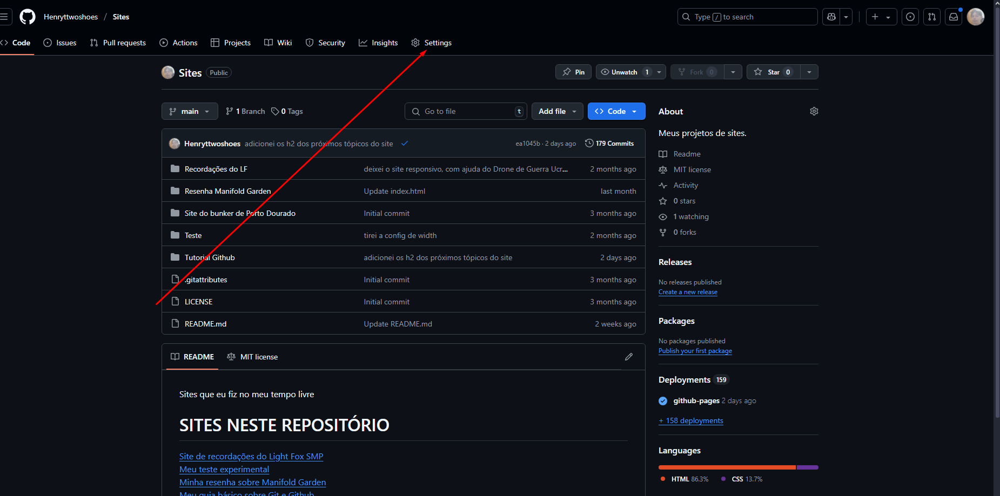 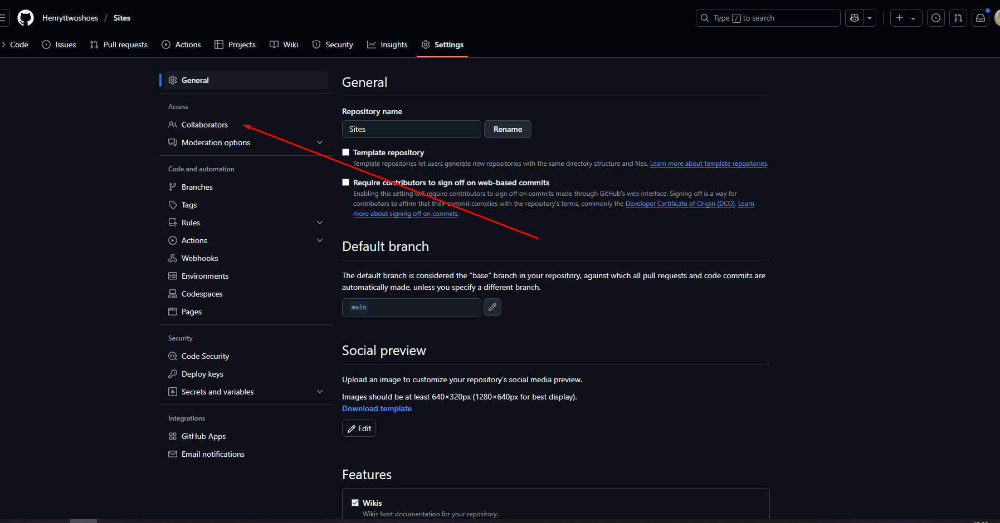 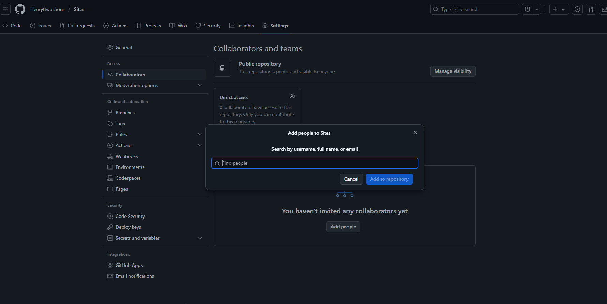Ao enviar o convite de colaboração, o outro usuário receberá um e-mail parecido com esse:
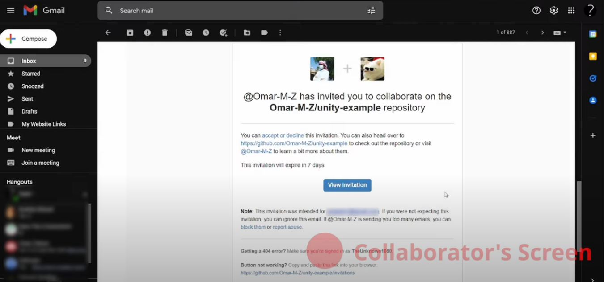O colaborador poderá manejar o repositório assim como o dono. Poderá criar branches, realizar commits, etc. Mas apenas o dono possui poder total sobre o repositório – apenas ele pode fazer ações como apagar o repositório.
Manipulando branches
Branches são como se fossem linhas do tempo alternativas do seu projeto que você pode usar para testar alguma alteração, feature ou coisas do tipo. São como caminhos seguros para desenvolver o programa sem alterar a versão oficial.
Para criar uma branch, basta ir no menu do Github Desktop e clicar no botão da branch atual e ir em “New branch”.
 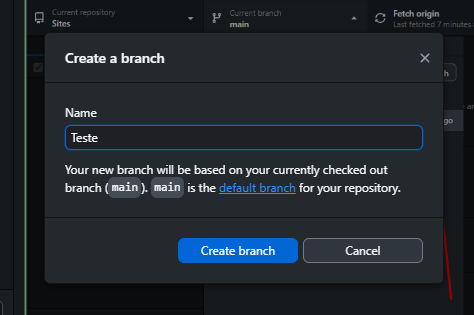
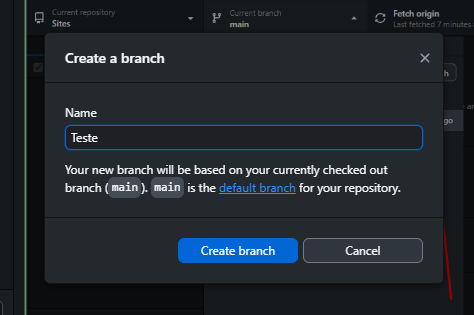
Depois de criada, a branch nova irá lhe dar acesso a uma outra vertente do projeto, tudo que você fizer lá vai ser salvo nela. Ao clicar no botão “publish branch”, a branch será publicada no menu do Github.
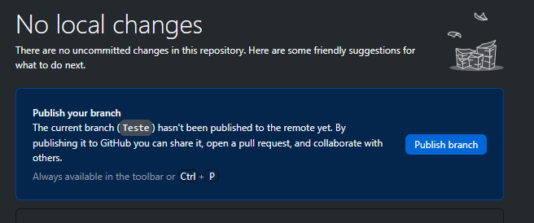 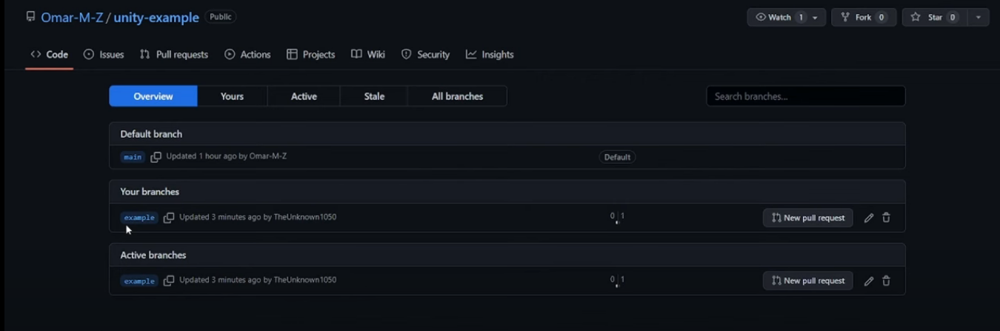Eventualmente, você irá concluir com si mesmo – ou falar com o seu chefe – que os testes do programa feitos na branch separada já podem ir para a versão oficial do programa, então como fundir as duas branches?
Basta ir no menu de “Pull requests” da página do repositório e solicitar um novo “Pull request” a partir do botão elencado nesse menu.
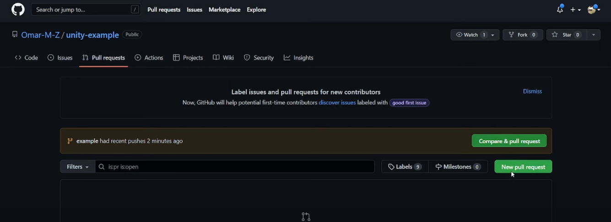E para finalmente fundir as branches, certifique-se que a main está no lado esquerdo enquanto a secundária está do lado esquerdo dessa configuração. Isso vai indicar qual branche irá ceder alterações para a outra.

Nesse menu você também pode revisar todas as diferenças entre uma versão e outra das duas branches selecionadas. Ao final, você pode fazer um post comentando o motivo e a descrição desse pull request.
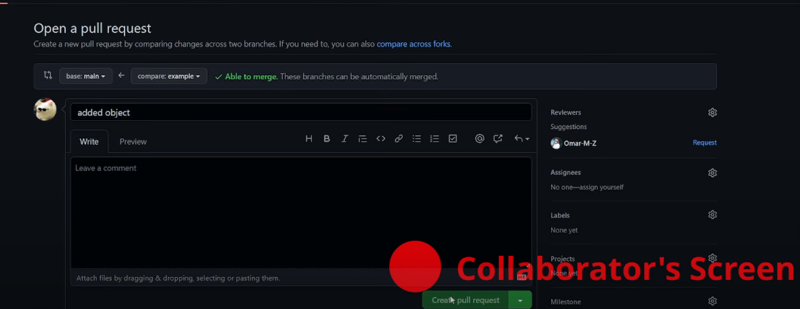Por fim, um colaborador ou o próprio dono do repositório pode aceitar o pedido de fusão das branches.
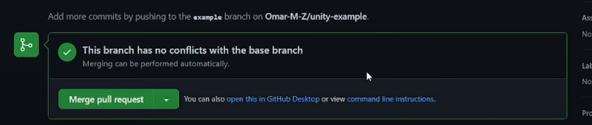Hospedando sites com o Github Pages
O Github oferece um serviço gratuito para hospedagem de sites em repositórios públicos da mesma maneira que este site está no ar.
Para conseguir hospedar seu site gratuitamente, basta adicionar o link para o diretório do arquivo .html no README, o que é um “README”? É um arquivo de texto que serve como folha de rosto para o seu repositório, sempre que um repositório tiver um arquivo desse na pasta ele aparecerá aberto na aba inicial dos arquivos do repositório, assim como visto na imagem.
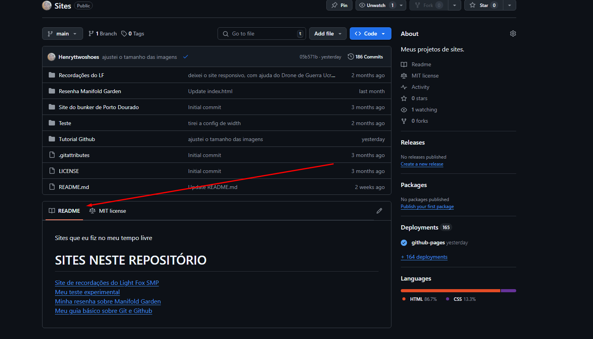O link pode ser elencado com a tag a dos padrões de HTML5, basta colocar o caminho para o arquivo entre as aspas do href=”” e o hyperlink será criado. Para referência, tente fazer de um jeito parecido com o da imagem abaixo.
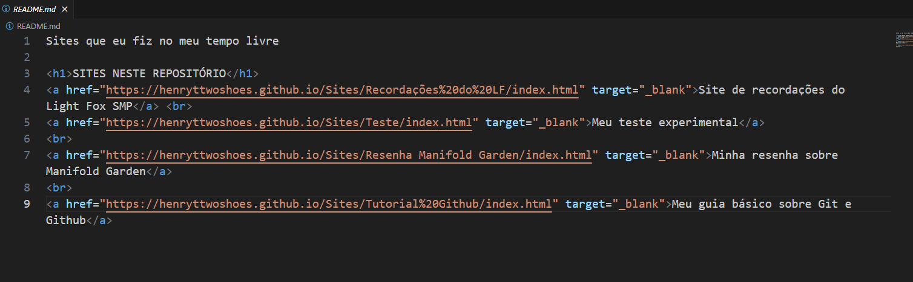Caso o site não funcione, tente ir nas configurações do repositório na seção de pages e cheque se está tudo ok.
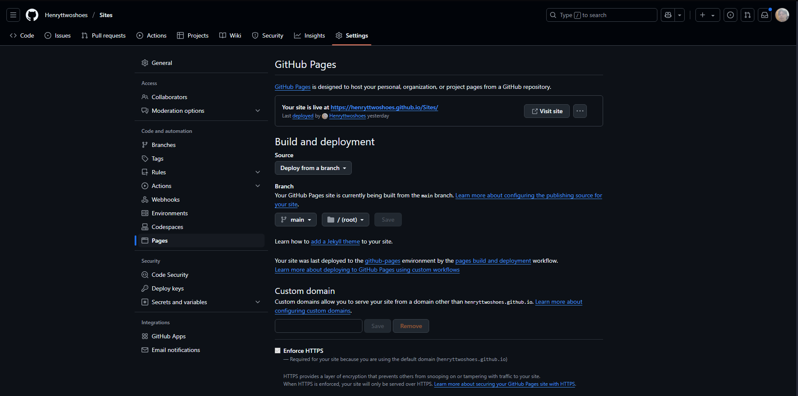Momento inceptionnnnnnnnnNNNNNNNNNNNNNNNNNNNNNNNN :D
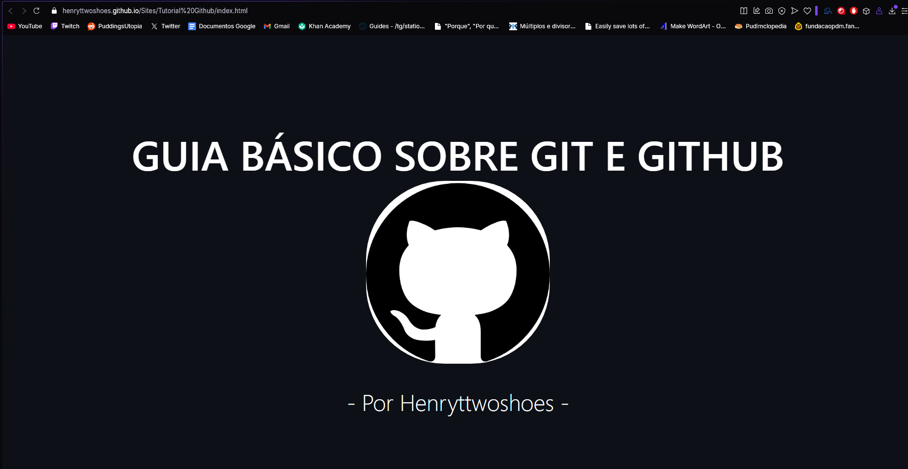